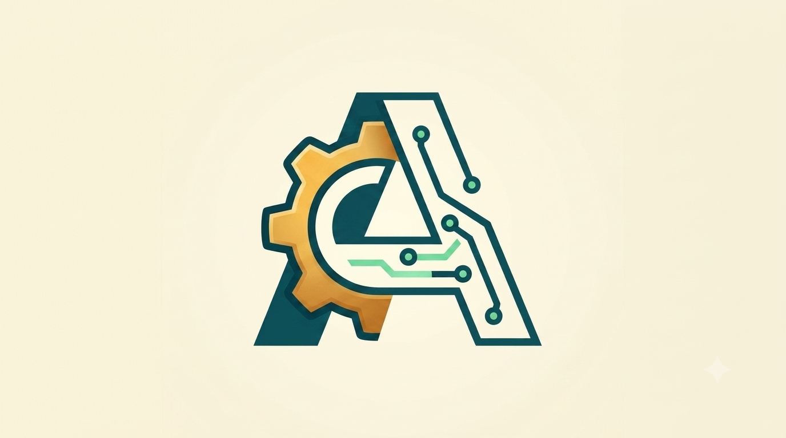

Precios · claros y sin letra pequeña
Sabrás lo que pagas antes de empezar.
Sin letra pequeña. Eliges tu servicio en Servicios, vienes aquí a ver el precio, y nos escribes para cerrar hora. Si necesitas hoy mismo: +15€ (según disponibilidad).
Particulares
| Visita y diagnóstico en casaGratis si se realiza el trabajo | 25€ |
|---|---|
| Optimización de PCLimpieza, rendimiento y arranque más rápido | Desde 45€ |
| Recuperación de datosSegún fallo y estado del disco/dispositivo | Desde 60€ |
| Mantenimiento preventivo | Desde 45€ |
| PC a medidaPresupuesto, montaje e instalación torre nueva (componentes aparte) | Desde 75€ |
| Asistente de compras tecnológicas | Desde 25€ |
| Mudanza a equipo nuevoProgramas, archivos y configuración migrados | 75€ |
| Soporte en remoto | 35€/h |
| Tu Técnico de CabeceraDudas día a día PC, móvil o apps, sin prisas | 35€/h |
| Revisión seguridad digitalContraseñas, copias, phishing | Desde 45€ |
| Smart home básicoRouter, cámaras, enchufes inteligentes | Desde 45€ |
| Web: resolución y cambiosConfiguraciones y/o modificaciones web · Caída, hosting, dominio, correo, WordPress | Desde 40€ |
Mismo día: si lo necesitas hoy, +15€ sobre el servicio (según hueco en agenda).
Garantía 15 días en el trabajo realizado. No cubre fallos de programas de terceros ni mal uso posterior.
Empresas y autónomos
| Urgencias en el díaDependiendo del tipo de falla y su posible resolución | Desde 60€/h |
|---|---|
| Soporte en remoto | 45€/h |
| Puesto nuevo listo el primer día | Desde 60€ |
| Datos a salvo (backups)Copias de seguridad · instalación + supervisión | Desde 150€ + 45€/mes |
| Departamento IT externo (iguala)Por puesto / mes | 150€/puesto/mes |
| Asesoramiento integral | Desde 30€ |
| Configuraciones extra | Desde 25€ |
| Web: resolución y cambiosConfiguraciones y/o modificaciones web | Desde 40€ |
¿Qué es la iguala? Por cada puesto: 2h de soporte al mes (remoto o presencial) + prioridad mismo día laborable. Horas extra a 35€/h. No incluye backups ni hardware (aparte).
Recogida y entrega a domicilio para reparaciones de taller — sin moverte.
Notas sobre precios
* Desplazamiento: a todos los precios se les aplica desplazamiento desde 15€.
** Tarifas no especificadas: puede haber tarifas no especificadas que se definirán en base a la urgencia, magnitud y resolución del problema.
*** Las tarifas pueden sufrir cambios por demanda, disponibilidad, tipos de resolución o cambios de mercado.
¿Dudas entre dos servicios?
Escríbenos y te decimos cuál necesitas. Sin compromiso. Llama al 654 225 831 o escribe a andreumatic@gmail.com.
